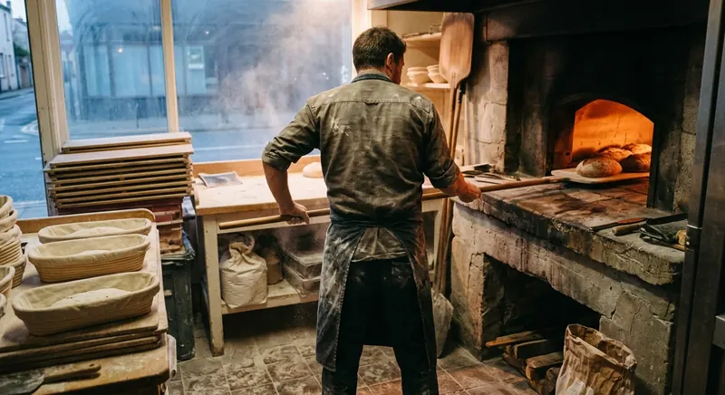
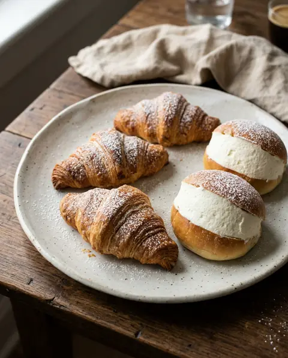
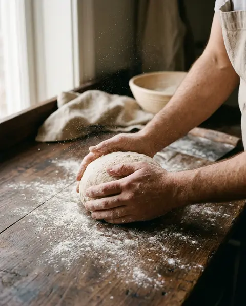

Pagnotta di campagna
Crosta scura e croccante, mollica umida che dura tre giorni.
€ 6,80 al kgSforniamo alle 6:30
Lievito madre, farine macinate a pietra e quarantotto ore di pazienza. Il resto lo fa il forno, prima che la città si svegli.

Dal forno
Crosta scura e croccante, mollica umida che dura tre giorni.
€ 6,80 al kg
Alta e soffice, con olio extravergine e sale grosso. Esce calda alle 11.
€ 2,50 al trancio
Cornetti sfogliati a mano e maritozzi con panna montata al momento.
da € 1,60
Il laboratorio
Impastiamo la sera, lasciamo riposare la notte e formiamo a mano all'alba. Niente macchine che fanno le forme al posto nostro: per questo ogni pagnotta è un po' diversa dall'altra.
Il lievito madre lo rinfreschiamo tutti i giorni, domenica compresa. È l'unico collega che non va mai in ferie.
Prenota per domani